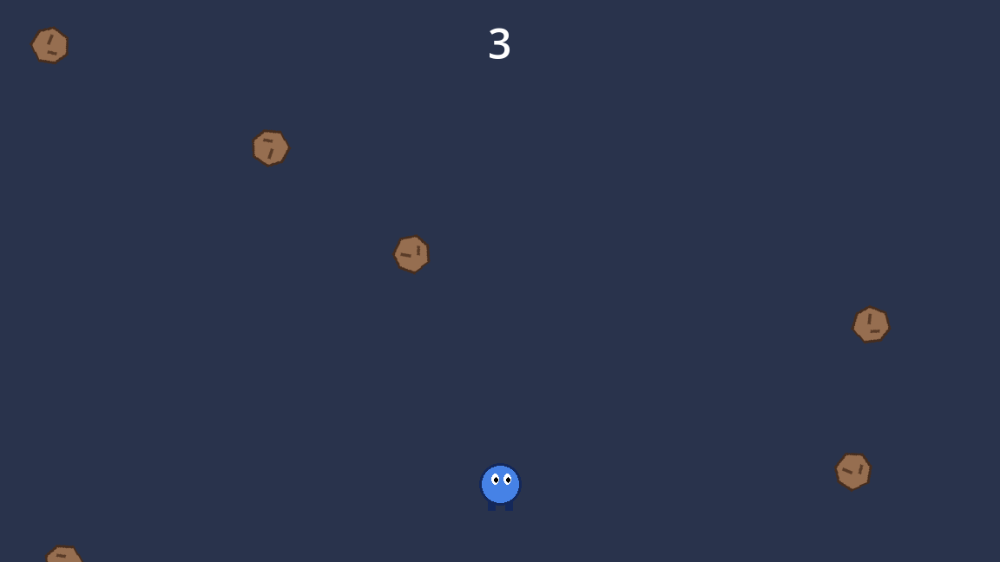
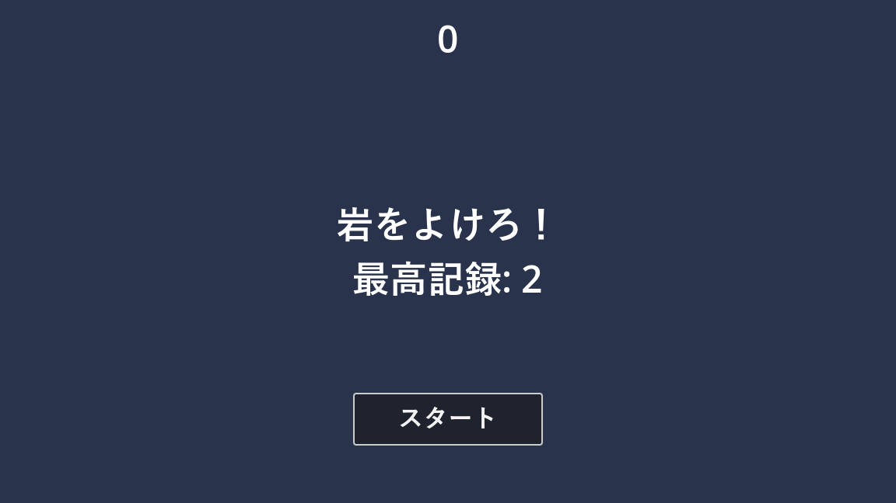

第 17 章 チュートリアル：岩よけゲームを作る
本章では、ここまでに学んだ内容を組み合わせて、1 本の小さなゲームを完成させる。題材は、空から落ちてくる岩をよけ続ける「岩よけゲーム」である。完成したものは、サンプルの chapter17 フォルダーにある。
完成形


図 35 岩よけゲームのプレイ画面
ゲームの仕様は次のとおりである。
「スタート」ボタンを押すと、2 秒後にゲームが始まる。
プレイヤーは上下左右に動ける。画面の外には出られない。
岩が画面の上からランダムな位置に落ちてくる。時間がたつほど、岩の数が増え、落下速度も上がる。
1 秒生き延びるごとに 1 点もらえる。
岩に当たると、プレイヤーが白く光って消え、ゲームオーバーになる。最高記録を更新した場合は保存する。
ゲーム中に P キーを押すと、一時停止する。
BGM と効果音を鳴らす。
本章で使う主な知識と、説明した章の対応は次のとおりである。
知識 |
説明した章 |
|---|---|
シーンのインスタンス化、グループ |
|
シグナル、 |
|
|
|
入力アクション |
|
|
|
|
|
|
|
|
|
|
|
点滅のシェーダー |
ゲームの構成
ゲームは 4 つのシーンで構成する。
シーン |
役割 |
|---|---|
|
プレイヤー。入力に応じて動き、岩に当たったら |
|
落ちてくる岩。まっすぐ落ちて、画面の外に出たら自分を削除する。 |
|
スコア、メッセージ、スタートボタンなどの表示。ボタンが押されたら |
|
ゲーム全体。ほかのシーンを組み合わせ、岩の生成、スコアの計算、ゲームオーバーの処理を行う。 |
図 36 main.tscn のノードの構成
シーンどうしは、第 5 章 ノードとシーン で説明した「呼び出しは下へ、通知は上へ」の方針でつなぐ。Main は子の Player や HUD のメソッドを直接呼ぶ。Player と HUD は Main のことを知らず、シグナルで出来事を知らせるだけである。
準備
新しいプロジェクトで作る場合は、次の準備をする。サンプルプロジェクトで作業する場合は、すでに設定済みである。
サンプルプロジェクトの
assetsフォルダーから、player.png、rock.png、bgm.wav、hit.wavをプロジェクトにコピーする。chapter16/flash.gdshaderもコピーする。「プロジェクト設定」の「インプットマップ」で、
move_left、move_right、move_up、move_down、pauseのアクションを作り、キーを割り当てる（第 9 章 入力）。「プロジェクト設定」の「レイヤー名」→「2D物理」で、レイヤー 2 に
player、レイヤー 3 にenemyと名前を付ける（第 11 章 2D の物理と衝突）。下部パネルの「オーディオ」で、
BGMとSEのバスを追加する（第 14 章 サウンド）。
画面の大きさは既定の 1152 × 648 のまま使う。
手順 1：プレイヤーを作る
シーンを作る
「シーン」→「新規シーン」で、次の構成のシーンを作り、player.tscn として保存する。
ノード名 |
種類 |
設定 |
|---|---|---|
|
|
コリジョンのレイヤーは 2（player）だけ、マスクは 3（enemy）だけにする。 |
|
|
テクスチャに |
|
|
シェイプに「新規 CircleShape2D」を作り、半径を 20 にする。位置を (0, 2) にする。 |
プレイヤーは岩にぶつかって止まる必要はなく、重なったことが分かればよい。そこで、物理ボディではなく Area2D を使う。当たり判定の円は、画像（直径 48 ピクセルの円）より小さめにしている。
スクリプトを書く
Player に player.gd をアタッチし、次のように書く。
1extends Area2D
2## 岩よけゲームのプレイヤー。上下左右に動き、岩に当たると hit シグナルを発行する。
3
4## 岩に当たったときに発行する。
5signal hit
6
7const SPEED: float = 400.0 # 移動速度 [ピクセル/秒]
8const MARGIN: float = 24.0 # 画面の端から離しておく距離
9
10@onready var _collision: CollisionShape2D = $CollisionShape2D
11@onready var _flash: ShaderMaterial = $Sprite2D.material
12
13
14func _ready() -> void:
15 # ゲーム開始までは表示も操作もしない。
16 hide()
17 set_process(false)
18
19
20func _process(delta: float) -> void:
21 var direction := Input.get_vector("move_left", "move_right", "move_up", "move_down")
22 position += direction * SPEED * delta
23 # 画面の外に出ないように位置を制限する。
24 var screen_size := get_viewport_rect().size
25 position = position.clamp(Vector2(MARGIN, MARGIN), screen_size - Vector2(MARGIN, MARGIN))
26
27
28## 指定した位置からゲームを開始する。
29func start(start_position: Vector2) -> void:
30 position = start_position
31 _flash.set_shader_parameter("flash_amount", 0.0)
32 show()
33 _collision.disabled = false
34 set_process(true)
35
36
37func _on_area_entered(_area: Area2D) -> void:
38 hit.emit()
39 set_process(false)
40 # 同じ衝突で何度も hit を発行しないよう、当たり判定を無効にする。
41 # 物理処理の最中には形状を変更できないため、set_deferred() で処理の後に変更する。
42 _collision.set_deferred("disabled", true)
43 # 白く光ってから消える演出（シェーダーは第 16 章の flash.gdshader と同じもの）
44 var tween := create_tween()
45 tween.tween_method(_set_flash_amount, 1.0, 0.0, 0.6)
46 tween.tween_callback(hide)
47
48
49func _set_flash_amount(amount: float) -> void:
50 _flash.set_shader_parameter("flash_amount", amount)
_ready()：ゲームが始まるまでは、非表示にして_process()も止めておく。set_process(false)で_process()の呼び出しを止められる。_process()：第 9 章 入力 と同じくget_vector()で移動する。clamp()で、位置を画面の端からMARGINだけ内側の範囲に制限している。start()：Mainから呼ばれ、指定した位置でプレイヤーを表示して動けるようにする。_on_area_entered()：岩（Area2D）が重なったときに呼ばれる。hitシグナルを発行し、白く光ってから消える演出をTweenで行う。
最後に、「シグナル」ドックで Player 自身の area_entered シグナルを _on_area_entered() に接続する。
_on_area_entered() の 42 行目では、当たり判定を set_deferred() で無効にしている。衝突のシグナルは物理演算の処理の最中に呼ばれるため、その場で衝突形状を変更するとエラーになる。set_deferred() は、現在の処理が終わった後にプロパティを変更する。当たり判定を無効にしておかないと、消える演出の途中で別の岩に触れたときに、hit が再び発行されてしまう。
手順 2：岩を作る
次の構成のシーンを作り、rock.tscn として保存する。
ノード名 |
種類 |
設定 |
|---|---|---|
|
|
コリジョンのレイヤーは 3（enemy）だけ、マスクはすべてオフにする。 |
|
|
テクスチャに |
|
|
シェイプに「新規 CircleShape2D」を作り、半径を 18 にする。 |
|
|
「四角形」（rect）を、岩の画像を囲む (-24, -24, 48, 48) にする。 |
岩のマスクをすべてオフにしているのは、岩の側から何かを検出する必要がないからである。プレイヤーの側のマスクに enemy が入っているので、プレイヤーは岩を検出できる。
VisibleOnScreenNotifier2D は、指定した四角形が画面に入ったときと出たときにシグナルを発行するノードである。
1extends Area2D
2## 画面の上から落ちてくる岩。画面の下へ出たら自分自身を削除する。
3
4## 落下速度 [ピクセル/秒]。生成する側（main.gd）が設定する。
5var speed: float = 200.0
6
7var _spin: float = 0.0 # 回転の速さ [ラジアン/秒]
8
9
10func _ready() -> void:
11 _spin = randf_range(-3.0, 3.0)
12 $VisibleOnScreenNotifier2D.screen_exited.connect(queue_free)
13
14
15func _process(delta: float) -> void:
16 position.y += speed * delta
17 rotation += _spin * delta
speed は Main が岩を作るときに設定する。_ready() では回転の速さをランダムに決め、screen_exited シグナルを queue_free に直接接続している。画面の下に出た岩は自動で削除されるので、岩が増え続けてメモリーを使い切ることはない。岩は画面の上の外側に生成されるが、screen_exited は一度画面に入ってから出たときに発行されるので、生成された直後に削除されることはない。
手順 3：HUD を作る
スコアやメッセージを表示する HUD（heads-up display）を作る。カメラの影響を受けず、常にゲーム画面の手前に表示されるよう、ルートを CanvasLayer にする。
ノード名 |
種類 |
設定 |
|---|---|---|
|
|
「プロセス」→「モード」を Always にする（一時停止中も動かすため）。 |
|
|
アンカーのプリセットを「上伸長」にする。文字を中央揃えにし、フォントサイズを 48 にする。 |
|
|
アンカーのプリセットを「中央水平伸長」にする。文字を上下左右とも中央揃えにし、フォントサイズを 48 にする。 |
|
|
アンカーのプリセットを「中央下」にし、少し上へずらす。テキストを「スタート」にする。 |
|
|
アンカーのプリセットを「Rect全面」にし、テキストを「一時停止中」にする。 |
1extends CanvasLayer
2## スコア、メッセージ、開始ボタンを表示する画面。一時停止の切り替えも受け持つ。
3
4## 開始ボタンが押されたときに発行する。
5signal start_game
6
7## ゲーム中だけ一時停止できるようにするためのフラグ。main.gd が設定する。
8var can_pause: bool = false
9
10@onready var _score_label: Label = $ScoreLabel
11@onready var _message: Label = $Message
12@onready var _start_button: Button = $StartButton
13@onready var _pause_label: Label = $PauseLabel
14
15
16func _ready() -> void:
17 _start_button.pressed.connect(_on_start_button_pressed)
18 _pause_label.hide()
19
20
21func _unhandled_input(event: InputEvent) -> void:
22 # この CanvasLayer は Process Mode が Always なので、一時停止中も入力を受け取れる。
23 if can_pause and event.is_action_pressed("pause"):
24 get_tree().paused = not get_tree().paused
25 _pause_label.visible = get_tree().paused
26
27
28func show_title(high_score: int) -> void:
29 show_message("岩をよけろ！\n最高記録: %d" % high_score)
30 _start_button.show()
31 _start_button.grab_focus()
32
33
34func show_message(text: String) -> void:
35 _message.text = text
36 _message.show()
37
38
39func hide_message() -> void:
40 _message.hide()
41
42
43func update_score(score: int) -> void:
44 _score_label.text = str(score)
45
46
47func show_game_over(high_score: int, is_new_record: bool) -> void:
48 show_message("新記録！" if is_new_record else "ゲームオーバー")
49 # 2 秒待ってからタイトル表示に戻す。
50 await get_tree().create_timer(2.0).timeout
51 show_title(high_score)
52
53
54func _on_start_button_pressed() -> void:
55 _start_button.hide()
56 start_game.emit()
show_game_over() では、「ゲームオーバー」などのメッセージを表示してから await で 2 秒待ち、タイトルの表示に戻している（第 7 章 GDScript の応用）。
一時停止は HUD が受け持つ。get_tree().paused を true にすると、処理モードが「継承」のノードはすべて止まる。HUD は処理モードを Always にしているので、一時停止中も _unhandled_input() が呼ばれ、もう一度 P キーを押すと再開できる。ゲームオーバーの後などに一時停止できないよう、can_pause が true のときだけ受け付けている。
手順 4：メインシーンを作る
最後に、すべてを組み合わせるメインシーンを作る。
ノード名 |
種類 |
設定 |
|---|---|---|
|
|
|
|
|
アンカーのプリセットを「Rect全面」にし、色を濃い紺色にする。マウスのフィルターを Ignore にする。 |
|
|
|
|
|
位置を (576, 560) にする。プレイヤーの開始位置の目印である。 |
|
|
待機時間を 0.6 にする。 |
|
|
待機時間は既定の 1 のままにする。 |
|
|
待機時間を 2、単発をオンにする。 |
|
|
|
|
|
ストリームに |
|
|
ストリームに |
Main に main.gd をアタッチし、次のように書く。
1extends Node
2## 岩よけゲームの進行を管理する。岩の生成、スコアの計算、ゲームオーバーの処理を行う。
3
4const Player := preload("res://chapter17/player.gd")
5const Rock := preload("res://chapter17/rock.gd")
6const Hud := preload("res://chapter17/hud.gd")
7const SAVE_PATH := "user://rock_dodge.cfg"
8
9## 生成する岩のシーン。インスペクターで rock.tscn を指定する。
10@export var rock_scene: PackedScene
11
12var score: int = 0
13var high_score: int = 0
14
15@onready var _player: Player = $Player
16@onready var _hud: Hud = $HUD
17@onready var _start_position: Marker2D = $StartPosition
18@onready var _rock_timer: Timer = $RockTimer
19@onready var _score_timer: Timer = $ScoreTimer
20@onready var _start_timer: Timer = $StartTimer
21@onready var _music: AudioStreamPlayer = $Music
22@onready var _hit_sound: AudioStreamPlayer = $HitSound
23
24
25func _ready() -> void:
26 _load_high_score()
27 _player.hit.connect(game_over)
28 _hud.start_game.connect(new_game)
29 _start_timer.timeout.connect(_on_start_timer_timeout)
30 _score_timer.timeout.connect(_on_score_timer_timeout)
31 _rock_timer.timeout.connect(_on_rock_timer_timeout)
32 _music.finished.connect(_music.play)
33 _hud.show_title(high_score)
34
35
36func new_game() -> void:
37 score = 0
38 _rock_timer.wait_time = 0.6
39 # 前のゲームで残っている岩をすべて削除する。
40 get_tree().call_group("rocks", "queue_free")
41 _player.start(_start_position.position)
42 _hud.update_score(score)
43 _hud.show_message("用意...")
44 _start_timer.start()
45 _music.play()
46
47
48func game_over() -> void:
49 _rock_timer.stop()
50 _score_timer.stop()
51 _music.stop()
52 _hit_sound.play()
53 _hud.can_pause = false
54 var is_new_record := score > high_score
55 if is_new_record:
56 high_score = score
57 _save_high_score()
58 _hud.show_game_over(high_score, is_new_record)
59
60
61func _on_start_timer_timeout() -> void:
62 _hud.hide_message()
63 _hud.can_pause = true
64 _rock_timer.start()
65 _score_timer.start()
66
67
68func _on_score_timer_timeout() -> void:
69 score += 1
70 _hud.update_score(score)
71 # 時間がたつほど岩の出現間隔を短くして、難しくする。
72 _rock_timer.wait_time = maxf(0.6 - score * 0.01, 0.2)
73
74
75func _on_rock_timer_timeout() -> void:
76 var rock: Rock = rock_scene.instantiate()
77 var screen_width := get_viewport().get_visible_rect().size.x
78 rock.position = Vector2(randf_range(24.0, screen_width - 24.0), -32.0)
79 rock.speed = randf_range(150.0, 250.0) + score * 5.0
80 add_child(rock)
81
82
83func _load_high_score() -> void:
84 var config := ConfigFile.new()
85 if config.load(SAVE_PATH) == OK:
86 high_score = config.get_value("record", "high_score", 0)
87
88
89func _save_high_score() -> void:
90 var config := ConfigFile.new()
91 config.set_value("record", "high_score", high_score)
92 config.save(SAVE_PATH)
スクリプトを保存したら、Main を選び、インスペクターに表示された Rock Scene（rock_scene）に rock.tscn をドラッグして設定する。
main.gd の主な処理は次のとおりである。
4 行目～ 6 行目：
player.gdなどをpreload()で読み込み、型の名前として使っている。class_nameを付けずに済むので、プロジェクト全体のクラス名を増やさずに、型の付いた変数を宣言できる。_ready()：シグナルを接続し、タイトルを表示する。
new_game()：スコアを 0 に戻し、前のゲームの岩を
rocksグループを使ってまとめて削除し（第 5 章 ノードとシーン）、プレイヤーを開始位置に置く。StartTimerを開始し、2 秒後に_on_start_timer_timeout()で岩の生成とスコアの計算を始める。_on_rock_timer_timeout()：
rock_sceneから岩のインスタンスを作り、画面の上の外側のランダムな位置に置いて、Mainの子として追加する。落下速度は、スコアが高いほど速くする。_on_score_timer_timeout()：1 秒ごとにスコアを増やす。岩を出す間隔を少しずつ短くして、難しくしていく。
game_over()：プレイヤーの
hitシグナルで呼ばれる。タイマーと BGM を止め、最高記録を更新していればConfigFileで保存する。
図 37 1 回のゲームの処理の流れ
手順 5：動かしてみる
main.tscn を開いて F6 を押すか、メインシーンに設定して F5 を押す。最初に次のようなタイトルの表示になる。


図 38 岩よけゲームのタイトルの表示
「スタート」を押してゲームを始め、次の点を確認する。
「スタート」を押すと「用意...」と表示され、2 秒後に岩が落ち始める。
プレイヤーが画面の外に出ない。
スコアが 1 秒ごとに増え、時間がたつと岩が増える。
岩に当たると白く光って消え、効果音が鳴る。2 秒後に「スタート」ボタンが再び表示される。
P キーで一時停止と再開ができる。
ゲームを終了して起動し直しても、最高記録が残っている。
うまく動かない場合は、付録 C のトラブルシューティングと、第 18 章 デバッグと最適化 のデバッグの方法を参考にする。特に、コリジョンのレイヤーとマスクの設定、シグナルの接続、rock_scene の設定を確認するとよい。
改良のアイデア
完成したゲームを改造して、さらに理解を深めよう。
岩に当たったときに、
CPUParticles2Dで破片が飛び散る効果を追加する（第 12 章 描画とアニメーション）。Camera2Dを追加し、岩に当たったときに画面を揺らす（第 12 章 描画とアニメーション）。岩の大きさや速さに種類を作り、第 15 章 シーン管理とデータ の独自のリソースでデータとして定義する。
一定時間ごとに出現するアイテムを取ると、しばらく無敵になるようにする。
上位 5 件の記録を JSON で保存し、ランキングとして表示する（第 15 章 シーン管理とデータ）。
第 19 章 エクスポート の手順でエクスポートし、友人に遊んでもらう。